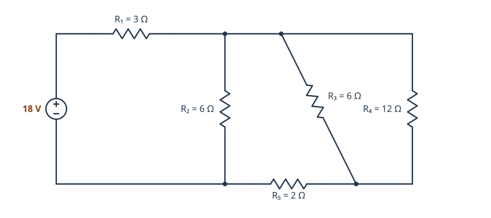
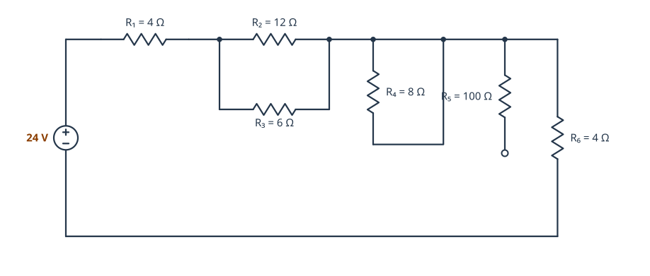
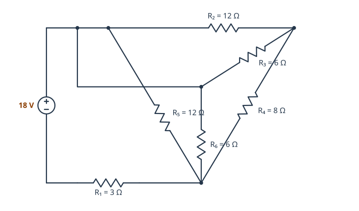
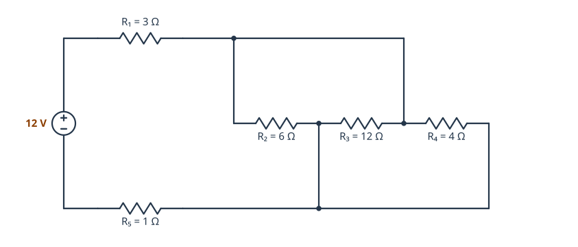
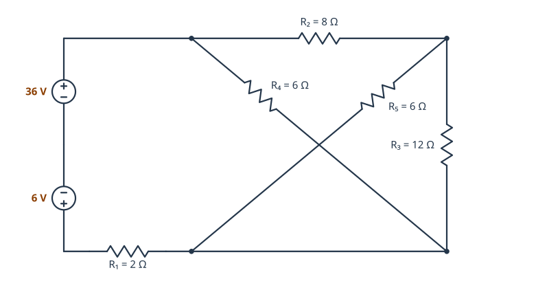
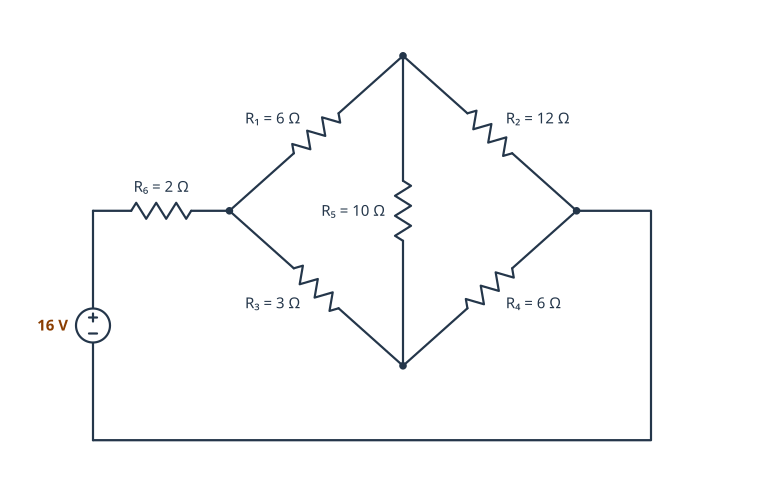

0221 · Montaje y mantenimiento de equipo · Tema 1
Boletín 5 · Circuitos enrevesados
Boletín 5 · Circuitos enrevesados
Estos circuitos están dibujados para despistar. Antes de calcular nada, identifica los nudos. Puedes practicarlo en el taller de nudos, que comprueba cada paso.
Antes de calcular nada
- Pon una letra a cada nudo. Todo lo que está unido solo por cable, sin resistencias en medio, es el mismo nudo, aunque esté dibujado lejos.
- Un cruce de cables sin punto no está conectado. Con punto, sí.
- Anota entre qué dos nudos está cada resistencia. Dos resistencias están en paralelo si comparten los dos nudos, y en serie si comparten uno solo y de él no sale ninguna otra rama.
- Si una resistencia tiene sus dos extremos en el mismo nudo, está cortocircuitada. Si tiene un extremo libre, es una rama abierta. En los dos casos no pasa corriente por ella.
- Redibuja el circuito de forma ordenada y solo entonces aplica la Ley de Ohm.
1. La rama que parece paralela
Resuelve:
- Marca con una letra cada nudo. ¿Entre qué dos nudos está conectada cada resistencia?
- La resistencia equivalente y la intensidad total.
- La intensidad por R₅ y la tensión en R₂.


2. Cortocircuito escondido y rama abierta
Resuelve:
- La resistencia equivalente y la intensidad total.
- ¿Qué corriente pasa por R₄? ¿Y por R₅? Justifica la respuesta.
- La potencia que disipa cada resistencia y la que entrega la fuente.


3. La falsa estrella
Resuelve:
- Parece una estrella dentro de un triángulo. Sigue el cable que sale del centro: ¿a qué nudo llega? ¿Cuántos nudos distintos hay?
- La resistencia equivalente y la intensidad total.
- La intensidad que pasa por cada una de las seis resistencias.


4. En fila, pero no en serie
Resuelve:
- R₂, R₃ y R₄ están dibujadas una detrás de otra. ¿Están en serie? Razónalo con los nudos.
- La resistencia equivalente y la intensidad total.
- Si se retira R₃, ¿cuánto vale la nueva intensidad total?


5. Diagonales cruzadas y fuentes enfrentadas
Resuelve:
- ¿Qué tensión neta aplican las dos fuentes? Fíjate en su polaridad.
- La resistencia equivalente y la intensidad total.
- La potencia de cada resistencia. ¿Cuánta potencia entrega la fuente de 36 V y qué le ocurre a la de 6 V?


6. Reto: el puente equilibrado
Resuelve:
- R₅ no está ni en serie ni en paralelo con ninguna otra. Calcula R₁/R₂ y R₃/R₄. ¿Qué observas?
- Suponiendo que por R₅ no pasa corriente, calcula la resistencia equivalente y la intensidad total.
- Comprueba que la tensión del vértice superior coincide con la del inferior (respecto al borne −).
- Si R₄ fuese de 12 Ω, ¿seguiría sin pasar corriente por R₅?
